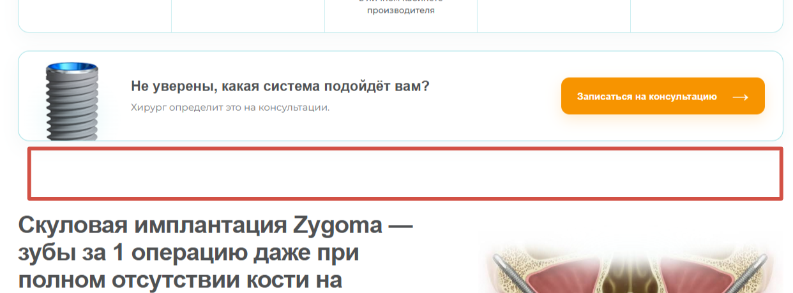

ЗАДАЧА 01 На согласовании
Статус авторизованного центра Nobel
Переработка блока о статусе клиники: показать уникальность центра в регионе и объяснить пациенту преимущества — подготовку врачей, оригинальные импланты и пожизненную гарантию.
Расположение на Nobel: после блока «Не уверены, какая система подойдёт вам?», перед разделом «Скуловая имплантация Zygoma».
Для разработчика · место размещения баннера на Nobel

Предлагаемый визуал
Открыть отдельно ↗Сертификаты за 2024–2026 годы взяты с all-on-4-implant.ru. Каждый открывается отдельно. Для финальной версии нужна ссылка на условия гарантии.
Вопрос № 1 «Из чего складывается стоимость имплантации Nobel Biocare?»
В текущем ответе суммы намеренно не дублируются: он отсылает к блоку стоимости. Если нужны суммы в самом FAQ, после подтверждения клиникой дополнить второй абзац: «Хирургический этап установки одного импланта Nobel Biocare — от 58 000 ₽, циркониевая коронка на имплант — от 55 000 ₽». Сверить суммы с действующим прайсом, уточнить включение абатмента, формирователя и других компонентов. Не складывать эти позиции в цену «под ключ» без подтверждённого состава. Для All-on-4 сумма от 370 000 ₽ обозначает хирургический этап на одну челюсть; протезирование уточняется отдельно.
Вопрос № 9 «Можно ли получить налоговый вычет за имплантацию Nobel Biocare?»
В новой редакции уже указан лимит 150 000 ₽ для расходов с 2024 года. На существующей странице «Налоговый вычет» клиники остались 120 000 ₽ и возврат до 15 600 ₽. Обновить эти сведения на связанной странице; не переносить их в ответ № 9. Лимит относится к расходам для вычета, а не к сумме возврата. Дорогостоящее лечение и код справки подтверждает клиника.
Хирургу проверить сроки восстановления в вопросе № 3 и условия повторного лечения в вопросе № 7. Публикация на сайте — после содержательного согласования.